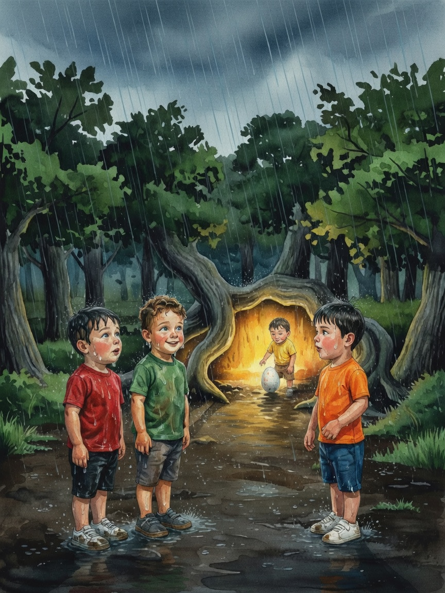
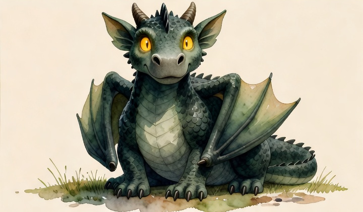
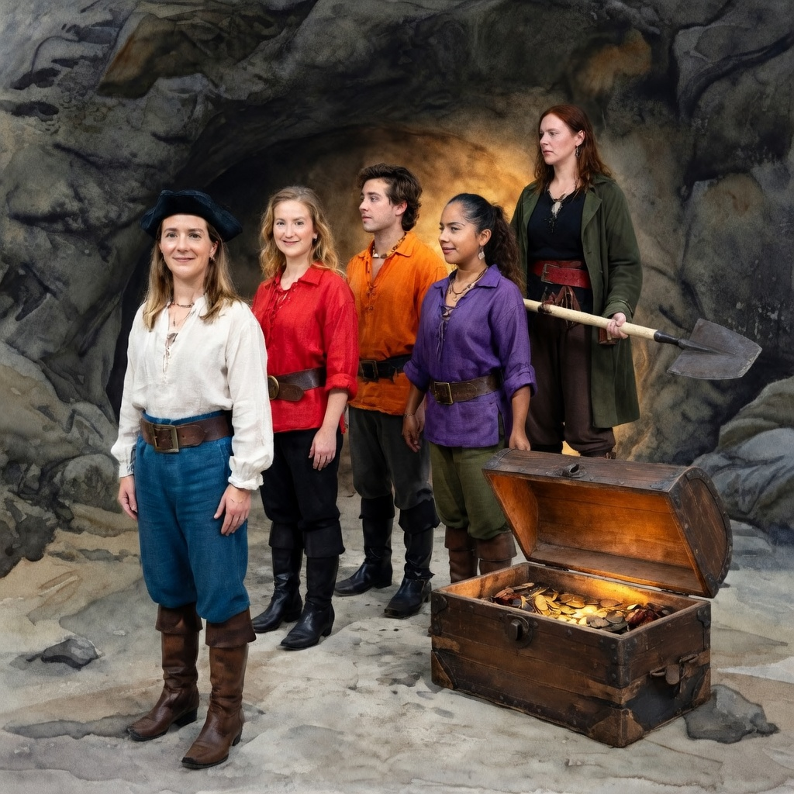
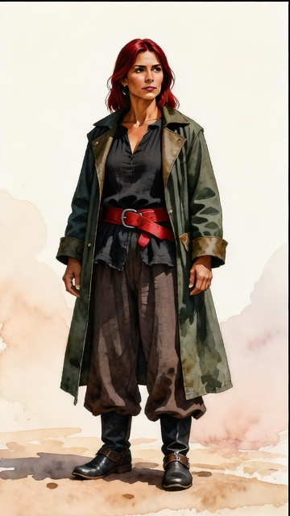

What the two fixes feed in
Nothing has been re-rendered yet — these are the inputs the composite would now receive, and the pages as they stand today. Both reference sheets are pulled live from the Visual Bible of the real production stories.
Neither fix invents anything. Each one takes an asset the story already built and had no way to reach the composite.
Fix 1 — the dragon
Das Ei im Wurzelnest, page 17. Declared objects: ["LOC002","ANI001","ART001","ART002","ART003","ART005","ART006"] · interaction: “stand together as a small wet group on the left, watching the dragon and Julian across the clearing”



Resolved by
dragon, large forest dragon. large — the body mass of a draft horse, four-legged, with two broad membranous wings folded against the flanks when at rest. deep forest-green scales across the body shading to dark charcoal on the back ridges, soft pale grey-green on the underbelly; two eyes that glow amber-gold like candlelight. large fan-shaped ears that lie flat when wary, a blunt rounded snout with wide nostrils, a heavy tail tapering to a rounded tip, wing membranes a translucent dark olive-green with visible vein ridges, no spines or horns — smooth rounded head
resolveSceneCreatures() and written into the plate prompt:dragon, large forest dragon. large — the body mass of a draft horse, four-legged, with two broad membranous wings folded against the flanks when at rest. deep forest-green scales across the body shading to dark charcoal on the back ridges, soft pale grey-green on the underbelly; two eyes that glow amber-gold like candlelight. large fan-shaped ears that lie flat when wary, a blunt rounded snout with wide nostrils, a heavy tail tapering to a rounded tip, wing membranes a translucent dark olive-green with visible vein ridges, no spines or horns — smooth rounded head
CREATURES IN THIS SCENE — paint each one, exactly as described: - Drachenmutter: dragon, large forest dragon. large — the body mass of a draft horse, four-legged, with two broad membranous wings folded against the flanks when at re… These creatures are part of the world plate and stay in it. If the SETTING DESCRIPTION above says to leave out figures or animals, that instruction does not apply to the creatures listed here — it exists to keep the human cast out, and they arrive separately. Paint no creature, animal or person that is not named above or drawn as a silhouette below.
Fix 2 — the Visual Bible character
Kapitänin Fiona, page 14. Declared cast: Fiona (foreground), Sarah (midground), Facundo (midground), Lorena (midground), Rossa (background)

null for the entire cast.
Kapitänin Rossa: adult woman, mid-thirties. tall, sturdy. hair: dark red, straight, jaw-length, worn loose. brown eyes, warm medium skin tone, sharp cheekbones, no facial hair. Signature: a long dark green oilskin coat worn open over her pirate outfit. Clothing: a black linen collarless wide-sleeved pirate shirt, dark brown wide-leg linen trousers cut to mid-calf, black leather buckle boots to the ankle, a wide red leather belt at the waist, a long dark green oilskin coat worn open over the top
STILL FALLS THROUGH Rossa crew member —
referenceImageUrl: undefined. No avatar and no VB sheet, so page 10 keeps its direct render rather than dropping a declared figure. Token matching deliberately does not link this entry to Kapitänin Rossa.Cast built for page 14, measured offline
Fiona depth=foreground sheet=349430B singleImage=false fromVB=false Sarah depth=midground sheet=374792B singleImage=false fromVB=false Facundo depth=midground sheet=364315B singleImage=false fromVB=false Lorena depth=midground sheet=413567B singleImage=false fromVB=false Rossa depth=background sheet=321948B singleImage=true fromVB=true <-- was: whole cast null